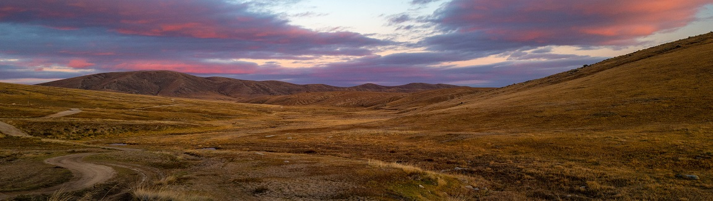

Big Sky Country
What will climate change do to grasslands?
By Riel St. Amand
Grasslands cover much of North America, most famously in the form of the Great Plains. The Great Plains stretch into multiple US States and Canandian Provinces, including the states of North and South Dakota, Kansas, Nebraska, Iowa, Oklahoma, and even Texas. Canadian provinces featuring the Great Plains include Manitoba, Saskatchewan, and Alberta. Non-Great Plains grasslands can also be found in the Central Valley in California, western coastlines of the Gulf of Mexico, various arid parts of the Southwest, and certain areas in the Great Basin. Grasslands as a whole are a major part of the farming economy in the US as well given their flat terrain and fertile soil. However, this extensive human activity has caused issues for the grassland ecosystems.
Humans have been tightly tied to grasslands for most of their history. Those activities include burning, livestock grazing, hunting, farming, and the development of villages, towns, and cities. What do these activities mean for the ecosystems of grasslands? Unfortunately, we see many native species of grasslands are in decline, both plant and animal species. Climate change is expected to make these declines worse. Furthermore, the distribution of various species is also expected to change. This is due to the flat terrain of grasslands. Their flatness makes them more vulnerable to these changes as temperature, climate, and rainfall changes can take place over much larger areas. That means that animal species have to move much larger distances to deal with changes to their ecosystem climate. Furthermore, major species like Bison no longer occupy the ranges they once did. This can further limit an ecosystem's ability to deal with climate change.
So, what will happen to the different ranges of grasslands we've mentioned so far? First, the Great Plains will most likely expand to the north in Canada while contracting in the south. Second, contracting in the south is a common pattern for grasslands, and many grasslands located in the southern areas of North America are expected to shrink.
One interesting consequence of the increased carbon dioxide in the atmosphere is that there is expected to be an increase in the amount of plant biomass in the grasslands. However, since there will not be an increase in available nutrients, these plants are expected to be more deificient in their micronutrient composition. Higher temperatures are also expected to increase mineralization and nitrogen deposition. This would lead to a direct increase in plant productivity. However, this would also drive a decrease in plant biodiversity since the most productive plants will be able to outcompete the others.
To sum up, what will climate change do to grasslands? Overall, ranges of various animals and plants will shift, while ranges of grasslands will shrink in the south. The amount of plant biomass will probably increase, but the biodiversity of those plants will shrink. Furthermore, the plants that are left will be depleted in micronutrients compared to earlier years.
Source: Bagne, K.; Ford, P.; Reeves, M. (November 2012). Grasslands. U.S. Department of Agriculture, Forest Service, Climate Change Resource Center. www.fs.usda.gov/ccrc/topics/grasslands/